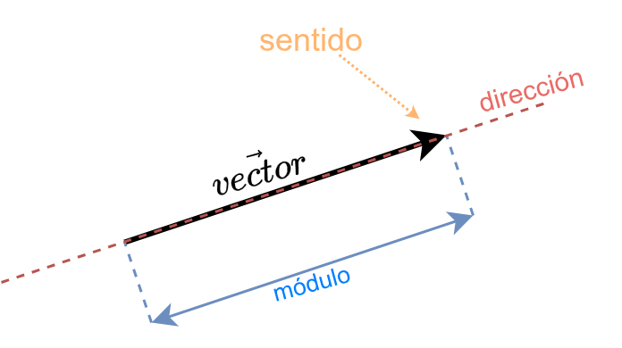

Las fuerzas. Introducción.
1 Definicición de fuerza
- Fuerza es todo aquello que produce una deformación y/o un cambio en el estado de movimiento de un cuerpo.
- Se mide en Newtons \([N]\) y es una magnitud vectorial, lo que significa que además de su valor hay que indicar en qué punto actúa y hacia dónde lo hace.
- Es importante señalar que los cuerpos ejercen fuerzas sobre otros cuerpos, pero NO “tienen” fuerza.
Ejemplos:
{kind=link}
2 Fuerzas de contacto y a distancia
Las fuerzas de contacto son aquellas que solo se ejercen cuando un cuerpo toca a otro, ya sea al chocar, al golpearlo, al rozarse, al empujarse, etc.
Pero hay otras fuerzas que se ejercen a distancia, es decir, sin necesidad de que un cuerpo deba tocar a otro. Se estudiarán más adelante, pero para conocerlas estas son:
- La fuerza de la gravedad que ejerce la Tierra sobre todos los cuerpos de su superficie.
- Las fuerzas magnéticas que ejerce un imán sobre algunos materiales metálicos u otros imanes.
- Las fuerzas eléctricas que ejercen las cargas eléctricas que tienen distinto signo.
{kind=link}
{kind=link}
{kind=link}
3 Caráracter vectorial de las fuerzas
Las magnitudes vectoriales son aquellas en las que es necesario indicar hacia dónde actúa esa magnitud.
Ejemplo: no es lo mismo soltar una piedra y que caiga hacia la Tierra ya que la fuerza de la gravedad actúa hacia abajo, que lanzarla hacia arriba con nuestra mano. Por eso hay que indicar hacia donde se dirige cada fuerza que actúa.
Estas magnitudes necesitan un vector para poder caracterizarla bien.
Pero ¿qué es un vector?
Vector
Un vector es la representación gráfica de una magnitud física (fuerza, velocidad, aceleración) que proporciona información no solo sobre su valor, si no también donde actúa y hacia dónde actúa.
Aquí se puede ver un diagrama de los elementos de un vector:

- El módulo que es el valor numérico de la magnitud del vector. Cuanto más alto sea su valor, más largo es el vector.
- Su dirección que es “la línea recta” sobre la que está el vector.
- Su sentido que es el lado de la dirección hacia el que actúa. Se indica con la punta de la flecha.
Y el nombre del vector se suele escribir con el nombre de la magnitud y se le pone una pequeña flechita arriba: \(\vec v\) si es velocidad, \(\vec F\) si es fuerza, \(\vec a\) si es aceleración, etc.
4 Fuerza neta o resultante
Cuando actúan dos o más fuerzas sobre un cuerpo, la fuerza total, neta o resultante es aquella que generará los mismos efectos que la combinación de las fuerzas individuales.
Para calcularla, hay que hacer una “suma vectorial” de las fuerzas que actúan. Para ello consideraremos:
- Fuerzas positivas (\(+\)): aquellas horizontales que vayan hacia la derecha y las verticales que vayan hacia arriba.
- Fuerzas negativas (\(-\)): aquellas horizontales que vayan hacia la izquierda y las verticales que vayan hacia abajo.
Suma de fuerzas que tienen la misma dirección
Cuando las fuerzas tienen la misma dirección, tendremos en cuenta los signos anteriores para sumar sus valores y lograr calcular la resultante.
{kind=link}
{kind=link}
Suma de fuerzas que tienen direcciones perpendiculares
En el caso de que las fuerzas tengan direcciones perpendiculares (forman un ángulo de \(90^{\circ}\)), entonces se usaría pitágoras para hallar la longitud de la hipotenusa.
{kind=link}
La suma de fuerzas siempre es vectorial. Aquí hemos visto sumas sencillas: cuando las fuerzas tienen la misma dirección y cuando tienen direcciones perpendiculares.
No obstante cuando trabajamos con vectores se hacen sumas vectoriales que se pueden ver en el artículo Operaciones con vectores
La fórmula general para averiguar la fuerza resultante (\(\vec F_T\)) que actúa sobre un cuerpo e obtiene a través de la suma vectorial de todas las fuerzas que actúan sobre ese cuerpo (\(\vec{F_i}\)):
\[ \vec F_T = \sum_{i=0}^n \vec F_i \]